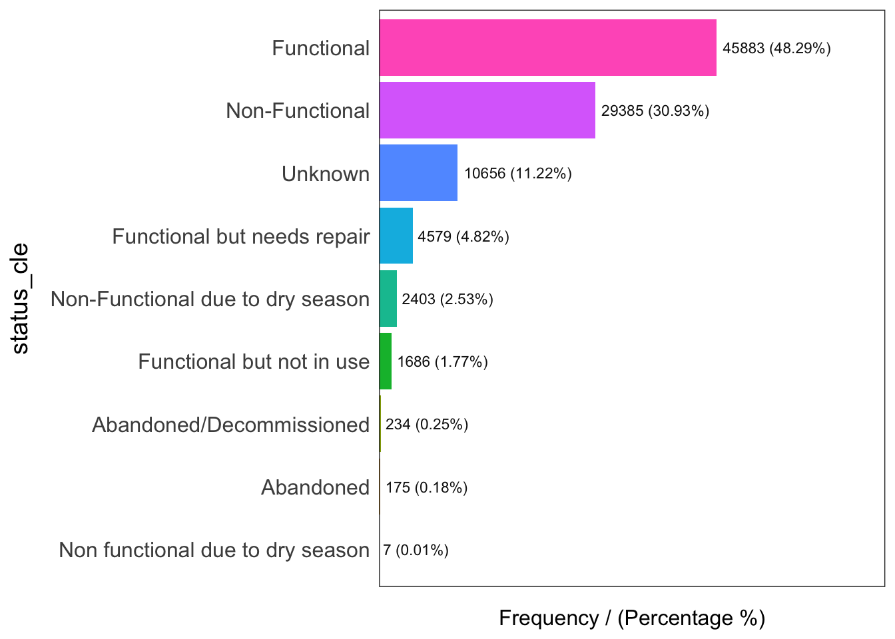
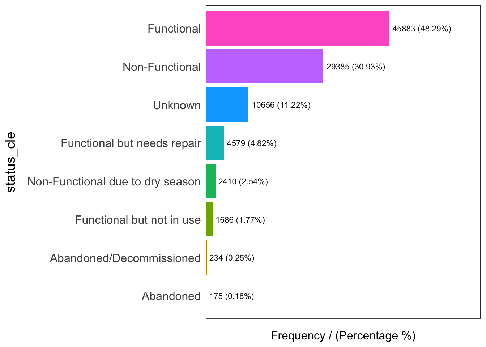
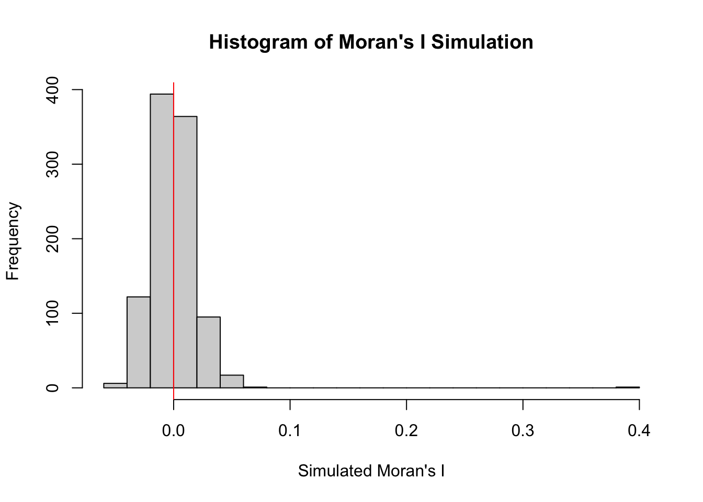
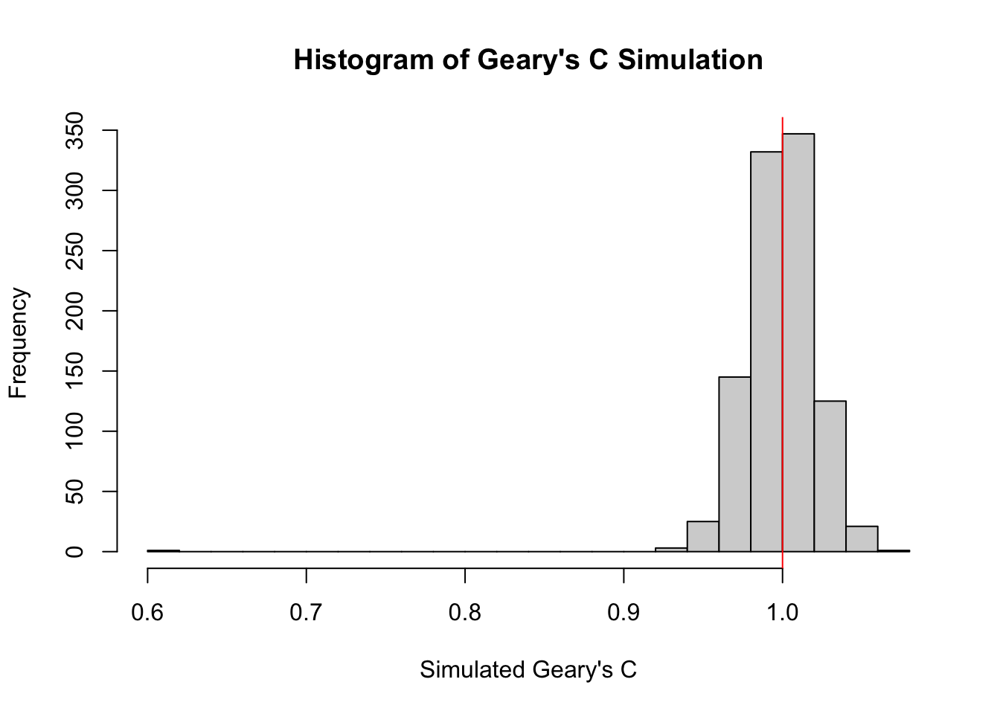
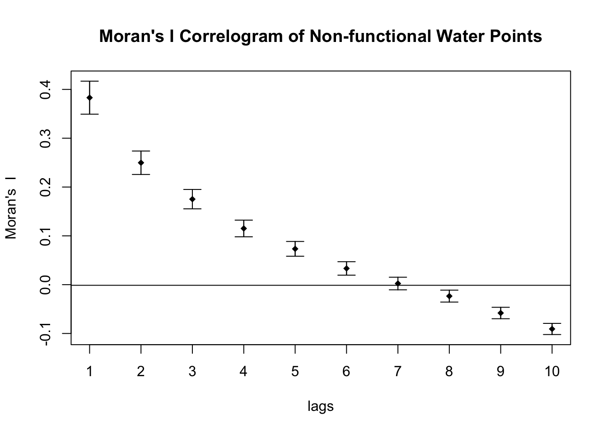
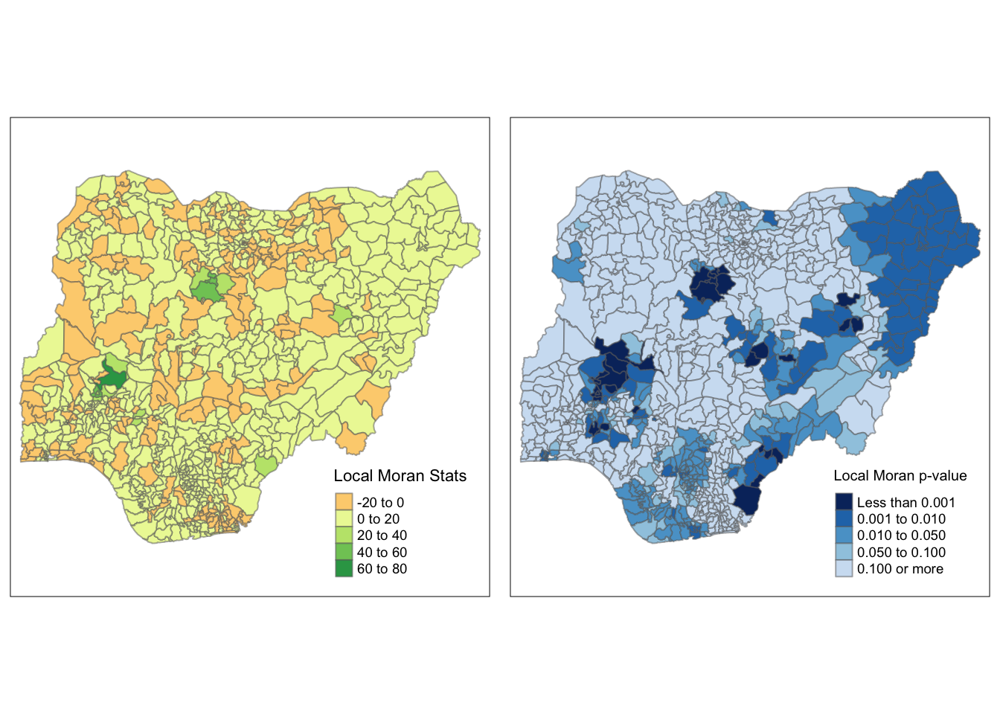
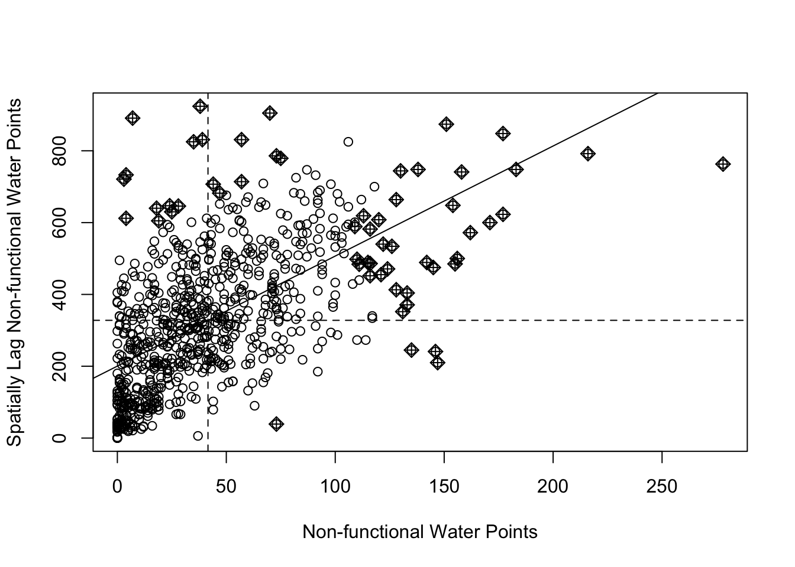
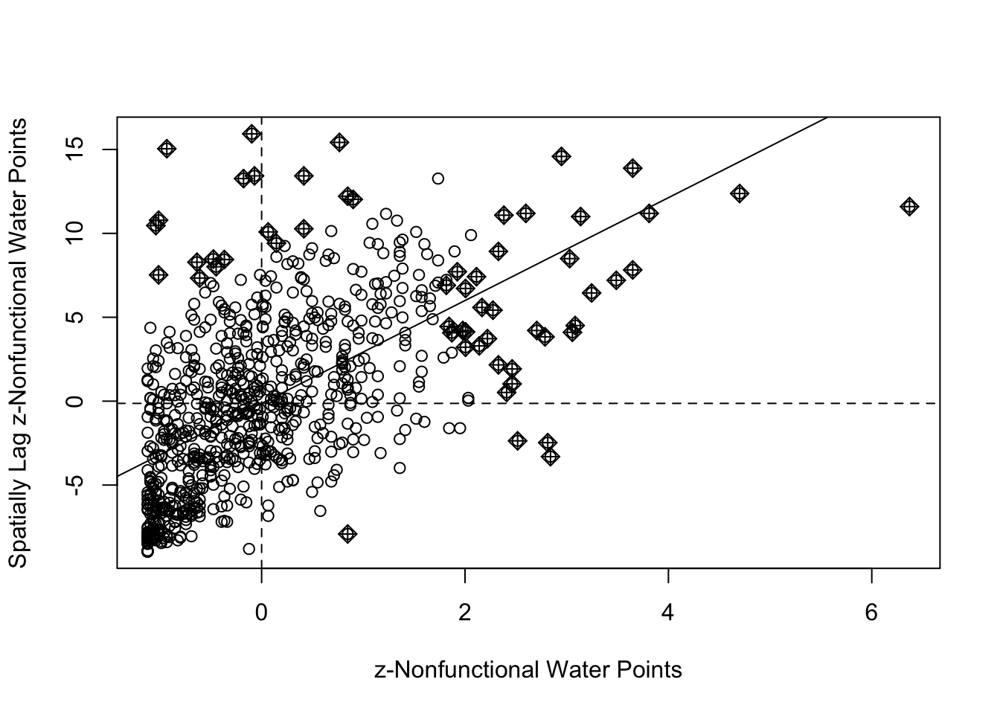
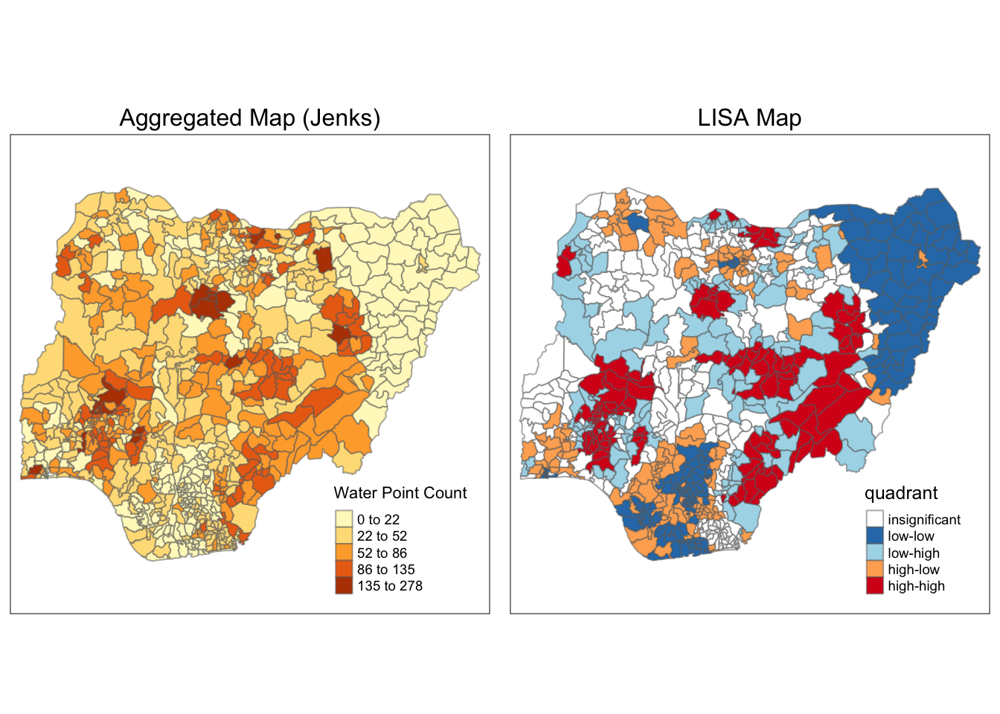
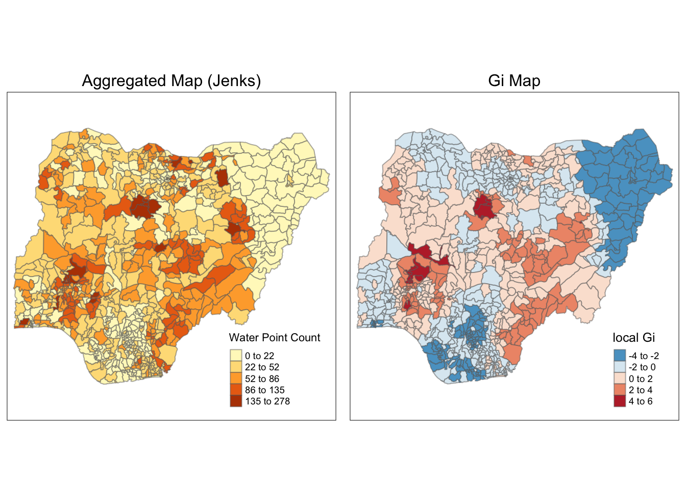

Show code
pacman::p_load(sf, tidyverse, tmap, spdep, funModeling)The objective of this exercise is to apply appropriate global and local measures of spatial association techniques to reveals the spatial patterns of non-functional water points in Nigeria.
The aspatial data of water points quality, status and other relevant information is taken from WPdx Global Data Repositories - WPdx+ version. The data set is downloaded in Shapefile format.
The geospatial data of Nigeria administrative regions is downloaded from Geoboundaries. The data level of ADM2, published in 2020, will be used.
sf: used for importing, managing, and processing geospatial data
tidyverse: a collection of packages for data science tasks. It contains the sub-packages dplyr, ggplot2, forcats, tibble, readr, stringr, tidyr, purrr
tmap: used for creating thematic maps, such as choropleth and bubble maps
spdep: used for calculating spatial dependence - weighting schemes and statistics
funModeling: used for EDA and data preparation
We load the packages into our working environment using the code below.
The data from WPdx Global Data Repositories comes in four files in dbf, prj, shp, shx formats. The files are renamed into geo_export for a more convenient reference.
Using st_read() from the sf package, we import the aspatial data into our working environment. The data is imported as a simple feature data table.
Reading layer `geo_export' from data source
`/Users/sylvia/sylvie-le/ISSS624/Take-home_Ex/Take-home_Ex1/data'
using driver `ESRI Shapefile'
Simple feature collection with 406566 features and 72 fields
Geometry type: POINT
Dimension: XY
Bounding box: xmin: -92.05073 ymin: -27.31495 xmax: 92.32694 ymax: 26.65622
Geodetic CRS: WGS84(DD)The data from Geoboundaries comes in six files in dbf, geojson, prj, shp, shx, topojson formats. The files are renamed to NGA-ADM2 for easier reference. To import these files as a simple feature data table, we also use st_read().
Reading layer `NGA-ADM2' from data source
`/Users/sylvia/sylvie-le/ISSS624/Take-home_Ex/Take-home_Ex1/data'
using driver `ESRI Shapefile'
Simple feature collection with 774 features and 5 fields
Geometry type: MULTIPOLYGON
Dimension: XY
Bounding box: xmin: 2.668534 ymin: 4.273007 xmax: 14.67882 ymax: 13.89442
Geodetic CRS: WGS 84The goals of this step include:
Examine the data structure and format, ensure consistent format between geospatial and aspatial data.
Study the content of the data tables and filter out data that are not related to water points in Nigeria.
Explore data type and data validity relating to the functionality of water points in Nigeria, transform the data where necessary.
wp geospatial dataFirst, we use st_geometry() to check the geometry list column of wp. There are 406,566 observations under the WGS84 coordinate reference system (CRS). Let’s take notes that the geometry type is point 🔑
Geometry set for 406566 features
Geometry type: POINT
Dimension: XY
Bounding box: xmin: -92.05073 ymin: -27.31495 xmax: 92.32694 ymax: 26.65622
Geodetic CRS: WGS84(DD)
First 5 geometries:Since the shapefile is in WGS84 CRS, we will assign crs = 4326 to wp. 4326 is the code of WGS84 in EPSG code. The task is conducted using st_set_crs().
Next, we will examine the attributes in the data table using glimpse() from dplyr.
Rows: 406,566
Columns: 73
$ row_id <dbl> 651816, 584864, 509399, 21983, 660321, 666619, 657081, 669…
$ source <chr> "Water For People", "Global Environment and Technology Fou…
$ lat_deg <dbl> -15.726464200, 6.723120000, 8.001933333, 8.084948140, 0.18…
$ lon_deg <dbl> 35.05067, -1.58151, -11.28760, -10.12595, 30.44659, 30.352…
$ date_repor <date> 2018-06-11, 2017-10-25, 2010-12-31, 2015-12-04, 2019-03-1…
$ time_repor <chr> "00:00:00.000", "00:00:00.000", "00:00:00.000", "00:00:00.…
$ status_id <chr> "Yes", "Yes", "Yes", "Yes", "Yes", "Yes", "Yes", "Yes", "Y…
$ water_sour <chr> NA, NA, NA, NA, "Piped Water", "Piped Water", NA, NA, NA, …
$ water_so_2 <chr> NA, NA, NA, NA, "Piped Water", "Piped Water", NA, NA, NA, …
$ water_te_2 <chr> "Kiosk", "Tapstand", "Tapstand", "Tapstand", NA, NA, "Taps…
$ X_water_tec <chr> "Tapstand", "Tapstand", "Tapstand", "Tapstand", NA, NA, "T…
$ facility_t <chr> "Improved", "Improved", "Improved", "Improved", "Improved"…
$ clean_coun <chr> "Malawi", "Ghana", "Sierra Leone", "Liberia", "Uganda", "U…
$ clean_adm1 <chr> "Blantyre", "Ashanti", "Eastern", "Lofa", "Western", "West…
$ clean_adm2 <chr> "Blantyre City", "Asokore Mampong Municipal", "Kenema", "K…
$ clean_adm3 <chr> "n.a. (2465)", NA, "Kando Leppeama", "Lucasu", "Kibale", "…
$ clean_adm4 <chr> NA, NA, NA, NA, "Kamwenge Town Council", "Buhanda", "Mahyo…
$ install_ye <dbl> NA, 2017, NA, NA, NA, NA, NA, NA, NA, NA, NA, NA, NA, NA, …
$ installer <chr> NA, NA, "Water Aid", NA, NA, NA, NA, NA, NA, NA, NA, NA, N…
$ rehab_year <dbl> NA, NA, NA, NA, NA, NA, NA, NA, NA, NA, NA, NA, NA, NA, NA…
$ rehabilita <chr> NA, NA, NA, NA, NA, NA, NA, NA, NA, NA, NA, NA, NA, NA, NA…
$ manageme_2 <chr> NA, NA, NA, "School Management", NA, NA, NA, NA, NA, NA, N…
$ status_cle <chr> NA, NA, "Functional", NA, NA, NA, NA, NA, NA, NA, NA, NA, …
$ pay <chr> NA, NA, NA, NA, NA, NA, NA, NA, NA, NA, NA, NA, NA, NA, NA…
$ fecal_coli <chr> NA, NA, NA, NA, "Present", "Present", "Present", NA, NA, "…
$ fecal_co_2 <chr> NA, "0", NA, NA, NA, NA, NA, NA, NA, NA, NA, NA, NA, NA, N…
$ subjective <chr> NA, NA, NA, NA, NA, NA, NA, NA, NA, NA, NA, NA, NA, NA, NA…
$ activity_i <chr> NA, NA, NA, NA, NA, NA, NA, NA, NA, NA, NA, NA, NA, NA, NA…
$ scheme_id <chr> NA, NA, NA, NA, NA, NA, NA, NA, NA, NA, NA, NA, NA, NA, NA…
$ wpdx_id <chr> "5GPQ73F2+C77", "6CRWPCF9+69X", "6CWC2P26+QXC", "6CWF3VMF+…
$ notes <chr> NA, NA, "Poor?Jenneh?Kandu Leppiema??", NA, NA, NA, NA, NA…
$ orig_lnk <chr> NA, NA, NA, "https://wash-liberia.org/raw-water-point-data…
$ photo_lnk <chr> NA, NA, NA, NA, NA, NA, NA, NA, NA, NA, NA, NA, NA, NA, NA…
$ country_id <chr> "MW", "GH", "SL", "LR", "UG", "UG", "UG", "UG", "UG", "UG"…
$ data_lnk <chr> "https://catalog.waterpointdata.org/datasets/wfp-2017-2020…
$ distance_t <dbl> 7034.8250, 3677.9101, 17540.3622, 21602.1376, 31948.1224, …
$ distance_2 <dbl> 3431.81039, 3944.70081, 4052.93329, 37030.19501, 593.69582…
$ distance_3 <dbl> 421.90674, 690.13048, 104.43156, 14456.72395, 149.01742, 1…
$ distance_4 <dbl> 8321.854, 5362.011, 17003.136, 52727.389, 40206.411, 38061…
$ distance_5 <dbl> 22044.5149, 7550.3392, 15474.4428, 31606.4649, 35770.4357,…
$ water_poin <chr> "{\"2018-06-11\": {\"source\": \"Water For People\", \"sta…
$ rehab_prio <dbl> NA, NA, NA, NA, NA, NA, NA, NA, NA, NA, NA, NA, NA, NA, NA…
$ served_pop <dbl> NA, NA, NA, NA, NA, NA, NA, NA, NA, NA, NA, NA, NA, NA, NA…
$ local_popu <dbl> NA, NA, NA, NA, NA, NA, NA, NA, NA, NA, NA, NA, NA, NA, NA…
$ crucialnes <dbl> NA, NA, NA, NA, NA, NA, NA, NA, NA, NA, NA, NA, NA, NA, NA…
$ pressure <dbl> NA, NA, NA, NA, NA, NA, NA, NA, NA, NA, NA, NA, NA, NA, NA…
$ usage_cap <dbl> 250, 250, 250, 250, 250, 250, 250, 250, 250, 250, 250, 250…
$ is_urban <chr> "True", "True", "False", "False", "False", "False", "False…
$ days_since <dbl> 1562, 1791, 4281, 2482, 1286, 1281, 1660, 6222, 1663, 1280…
$ staleness_ <dbl> 61.11805, 56.86178, 25.93887, 45.73258, 66.67340, 66.77856…
$ is_latest <chr> "T", "T", "T", "T", "T", "T", "T", "T", "T", "T", "T", "T"…
$ location_i <dbl> 355848, 349148, 98255, 285679, 362508, 362657, 351144, 777…
$ cluster_si <dbl> 1, 1, 1, 1, 1, 1, 1, 2, 1, 1, 1, 1, 1, 1, 1, 1, 1, 1, 1, 1…
$ clean_co_2 <chr> "MWI", "GHA", "SLE", "LBR", "UGA", "UGA", "UGA", "UGA", "U…
$ country_na <chr> "Malawi", "Ghana", "Sierra Leone", "Liberia", "Uganda", "U…
$ water_so_3 <chr> NA, NA, "Gravity stand-post", "Public standpipe", NA, NA, …
$ water_tech <chr> "Communal water kiosk", "Standpost", NA, NA, "Pumped piped…
$ status <chr> "1", NA, "Functional", NA, "1", "0", "1", "1", "1", "1", N…
$ adm2 <chr> "Kameza", NA, "Kenema", NA, "Kibale", "Kitagwenda", "Kitag…
$ adm3 <chr> NA, NA, NA, NA, "Kamwenge T/Council", "Buhanda", "Mahyoro"…
$ management <chr> NA, NA, NA, "Institutional Management - School", NA, NA, N…
$ adm1 <chr> "Blantyre", NA, "Eastern", "Lofa", "Kamwenge", "Kamwenge",…
$ lat_deg_or <dbl> NA, NA, NA, NA, NA, NA, NA, NA, NA, NA, NA, NA, NA, NA, NA…
$ lat_lon_de <chr> "(-15.7264642?, 35.0506729?)", "(6.72312?, -1.58151?)", "(…
$ lon_deg_or <dbl> NA, NA, NA, NA, NA, NA, NA, NA, NA, NA, NA, NA, NA, NA, NA…
$ public_dat <chr> "https://catalog.waterpointdata.org/datafiles/wfp-2017-202…
$ converted <chr> NA, NA, "#install_year, #notes", "#status", NA, NA, NA, NA…
$ count <dbl> 1, 1, 1, 1, 1, 1, 1, 1, 1, 1, 1, 1, 1, 1, 1, 1, 1, 1, 1, 1…
$ date_creat <date> 2022-02-18, 2020-07-29, 2020-07-30, 2020-09-11, 2022-02-1…
$ time_creat <chr> "05:36:33.000", "19:21:47.000", "08:35:45.000", "11:22:31.…
$ date_updat <date> 2022-02-18, 2020-07-29, 2020-07-30, 2020-09-11, 2022-02-1…
$ time_updat <chr> "05:36:33.000", "19:21:47.000", "08:35:45.000", "11:22:31.…
$ geometry <POINT [°]> POINT (35.05067 -15.72646), POINT (-1.58151 6.72312)…We notice that in the clean_coun column, there are many countries name such as Malawi, Ghana, Sierra Leone, etc. This means that the wp data set contains the information of other countries besides Nigeria. filter() of the package dplyr is used to get the data that only belongs to Nigeria.
Now we will examine the filtered wp data set using head() of Base R. The function reveals that wp now only contains Nigeria-relevant data.
Simple feature collection with 5 features and 72 fields
Geometry type: POINT
Dimension: XY
Bounding box: xmin: 3.597668 ymin: 6.48694 xmax: 7.92972 ymax: 7.98
Geodetic CRS: WGS 84
row_id source lat_deg lon_deg
1 429068 GRID3 7.980000 5.120000
2 222071 Federal Ministry of Water Resources, Nigeria 6.964532 3.597668
3 160612 WaterAid 6.486940 7.929720
4 160669 WaterAid 6.727570 7.648670
5 160642 WaterAid 6.779900 7.664850
date_repor time_repor status_id water_sour water_so_2 water_te_2
1 2018-08-29 00:00:00.000 Unknown <NA> <NA> Tapstand
2 2015-08-16 00:00:00.000 Yes Borehole Well Mechanized Pump
3 2020-12-04 00:00:00.000 Yes Borehole Well Hand Pump
4 2020-12-04 00:00:00.000 Yes Borehole Well <NA>
5 2020-12-04 00:00:00.000 Yes Borehole Well Hand Pump
X_water_tec facility_t clean_coun clean_adm1 clean_adm2 clean_adm3
1 Tapstand Improved Nigeria Ekiti Moba <NA>
2 Mechanized Pump Improved Nigeria Ogun Obafemi-Owode <NA>
3 Hand Pump Improved Nigeria Ebonyi Ohaukwu <NA>
4 <NA> Improved Nigeria Enugu Isi-Uzo <NA>
5 Hand Pump Improved Nigeria Enugu Isi-Uzo <NA>
clean_adm4 install_ye installer rehab_year rehabilita manageme_2 status_cle
1 <NA> NA <NA> NA <NA> <NA> <NA>
2 <NA> NA <NA> NA <NA> Other Functional
3 <NA> NA <NA> NA <NA> <NA> <NA>
4 <NA> NA <NA> NA <NA> <NA> <NA>
5 <NA> NA <NA> NA <NA> <NA> <NA>
pay fecal_coli fecal_co_2 subjective
1 <NA> <NA> <NA> <NA>
2 No <NA> <NA> Acceptable quality
3 <NA> <NA> <NA> <NA>
4 <NA> <NA> <NA> <NA>
5 <NA> <NA> <NA> <NA>
activity_i scheme_id wpdx_id notes
1 1a117ba2-5256-4801-874c-f7611a4499dd <NA> 6FV7X4JC+222 Tap Water
2 <NA> <NA> 6FR5XH7X+R37 Ajura
3 <NA> <NA> 6FR9FWPH+QVH <NA>
4 <NA> <NA> 6FR9PJHX+2FF <NA>
5 <NA> <NA> 6FR9QMH7+XW9 <NA>
orig_lnk
1 https://nigeria.africageoportal.com/datasets/GRID3::grid3-nigeria-water-points/about
2 <NA>
3 <NA>
4 <NA>
5 <NA>
photo_lnk country_id
1 <NA> NG
2 <NA> NG
3 <NA> NG
4 <NA> NG
5 <NA> NG
data_lnk
1 https://catalog.waterpointdata.org/datasets/grid3-nigeria-water-points-61ae7cd9
2 https://catalog.waterpointdata.org/datasets/federal-ministry-of-water-resources-nigeria-5efb3667
3 https://catalog.waterpointdata.org/datasets/rain-nigeria-5fe0f6d7
4 https://catalog.waterpointdata.org/datasets/rain-nigeria-5fe0f6d7
5 https://catalog.waterpointdata.org/datasets/rain-nigeria-5fe0f6d7
distance_t distance_2 distance_3 distance_4 distance_5
1 767.3742 921.79187 3146.7332 41049.94 959.365
2 13364.9005 48.87743 4167.5191 13898.65 9405.783
3 9492.7619 4333.34280 693.2112 27381.92 72060.118
4 9319.0815 23276.33227 307.7162 34823.61 31665.447
5 5437.7141 18783.56566 134.6121 40785.89 31240.904
water_poin
1 {"2018-08-29": {"source": "GRID3", "status_id": "Unknown", "water_tech_clean": "Tapstand"}}
2 {"2015-08-16": {"source": "Federal Ministry of Water Resources, Nigeria", "status_id": "Yes", "water_source_clean": "Borehole", "water_tech_clean": "Mechanized Pump"}}
3 {"2020-12-04": {"source": "WaterAid", "status_id": "Yes", "water_source_clean": "Borehole", "water_tech_clean": "Hand Pump"}}
4 {"2020-12-04": {"source": "WaterAid", "status_id": "Yes", "water_source_clean": "Borehole"}}
5 {"2020-12-04": {"source": "WaterAid", "status_id": "Yes", "water_source_clean": "Borehole", "water_tech_clean": "Hand Pump"}}
rehab_prio served_pop local_popu crucialnes pressure usage_cap is_urban
1 NA NA NA NA NA 250 True
2 NA 140 887 0.1578354 0.140000 1000 False
3 NA 0 0 NA NA 300 False
4 NA 492 492 1.0000000 1.640000 300 False
5 NA 868 1919 0.4523189 2.893333 300 False
days_since staleness_ is_latest location_i cluster_si clean_co_2 country_na
1 1483 62.65911 T 358773 1 NGA Nigeria
2 2592 44.17405 T 264633 1 NGA Nigeria
3 655 81.34550 T 397972 1 NGA Nigeria
4 655 81.34550 T 397984 1 NGA Nigeria
5 655 81.34550 T 397982 1 NGA Nigeria
water_so_3 water_tech status
1 Tap <NA> <NA>
2 Improved Tube well or borehole Motorised Functional (and in use)
3 Borehole fitted with Handpump <NA> <NA>
4 Gen. set powered borehole <NA> <NA>
5 Borehole fitted with Handpump <NA> <NA>
adm2 adm3 management adm1 lat_deg_or lat_lon_de
1 <NA> <NA> <NA> <NA> NA (7.98?, 5.12?)
2 Obafemi-Owode <NA> Other Ogun NA (6.9645317?, 3.5976683?)
3 <NA> <NA> <NA> Enugu NA (6.48694?, 7.92972?)
4 <NA> <NA> <NA> Enugu NA (6.72757?, 7.64867?)
5 <NA> <NA> <NA> Enugu NA (6.7799?, 7.66485?)
lon_deg_or
1 NA
2 NA
3 NA
4 NA
5 NA
public_dat
1 https://catalog.waterpointdata.org/datafiles/grid3-nigeria-water-points-61ae7cd9.csv
2 https://catalog.waterpointdata.org/datafiles/federal-ministry-of-water-resources-nigeria-5efb3667.xlsx
3 https://catalog.waterpointdata.org/datafiles/rain-nigeria-5fe0f6d7.xlsx
4 https://catalog.waterpointdata.org/datafiles/rain-nigeria-5fe0f6d7.xlsx
5 https://catalog.waterpointdata.org/datafiles/rain-nigeria-5fe0f6d7.xlsx
converted count date_creat
1 <NA> 1 2021-12-06
2 #status_id, #water_source, #pay, #status, #management 1 2020-06-30
3 <NA> 1 2020-12-21
4 <NA> 1 2020-12-21
5 <NA> 1 2020-12-21
time_creat date_updat time_updat geometry
1 21:12:57.000 2021-12-06 21:12:57.000 POINT (5.12 7.98)
2 12:56:07.000 2020-06-30 12:56:07.000 POINT (3.597668 6.964532)
3 19:26:15.000 2020-12-21 19:26:15.000 POINT (7.92972 6.48694)
4 19:26:15.000 2020-12-21 19:26:15.000 POINT (7.64867 6.72757)
5 19:26:15.000 2020-12-21 19:26:15.000 POINT (7.66485 6.7799)Now we will write the filtered data table into a new rds file named wp_nga using the write_rds() function from the sf package.
From this point on, we will work on the wp_nga file.
From the result of the code above, we notice that column status_cle has NA values. Since our goal is to examine the functionality of the water points, the data in status_cle should be transformed to remove the NA values. One way to do it is to recode the NA values to “Unknown”. replace_na() from the tidyr package is used to do the mentioned task.
To preserve the existing variables while adding new ones, mutate() from the dplyr package is used.
All changes are written into the wp_nga file using read_rds().
Let’s look at the distribution of status_cle. We will use freq() from the funModeling package for this task.

status_cle frequency percentage cumulative_perc
1 Functional 45883 48.29 48.29
2 Non-Functional 29385 30.93 79.22
3 Unknown 10656 11.22 90.44
4 Functional but needs repair 4579 4.82 95.26
5 Non-Functional due to dry season 2403 2.53 97.79
6 Functional but not in use 1686 1.77 99.56
7 Abandoned/Decommissioned 234 0.25 99.81
8 Abandoned 175 0.18 99.99
9 Non functional due to dry season 7 0.01 100.00We can see that there are two variables that carry the same meaning: Non-Functional due to dry season and Non functional due to dry season. We will use replace() from dplyr to do this task.
Let’s re-examine the distribution of status_cle.

status_cle frequency percentage cumulative_perc
1 Functional 45883 48.29 48.29
2 Non-Functional 29385 30.93 79.22
3 Unknown 10656 11.22 90.44
4 Functional but needs repair 4579 4.82 95.26
5 Non-Functional due to dry season 2410 2.54 97.80
6 Functional but not in use 1686 1.77 99.57
7 Abandoned/Decommissioned 234 0.25 99.82
8 Abandoned 175 0.18 100.00Non-functional water points are defined as those which are not functional or abandoned. Using filter() from the dplyr package, we will save the non-functional water point data into a simple feature data table named wpt_nonfunctional.
Now we can inspect the distribution of non-functional water points by type using freq().
nga aspatial dataWe will check the CRS of nga using st_geometry().
Geometry set for 774 features
Geometry type: MULTIPOLYGON
Dimension: XY
Bounding box: xmin: 2.668534 ymin: 4.273007 xmax: 14.67882 ymax: 13.89442
Geodetic CRS: WGS 84
First 5 geometries:As the CRS of nga is WGS84, we will assign crs = 4326 using st_set_crs().
Next, we plot the geometry using plot() of Base R. As our data is the regions of Nigeria by administrative division management level 2, the map below depicts the 774 Local Government Areas of Nigeria.
From the map, it is noticeable that the size of government areas varies significantly. Let’s keep this in mind for further analysis 💪
Because the geometry type of our geospatial data is point, we need to compute the number of points inside each polygon. The functions below will be used for that task.
mutate(): preserves the existing variables while adding new variables, from dplyr package
st_intersects(): spatial intersect predicate for stars and sfc object, from stars package, a sub-package of tmap.
lengths(): get the length of each element of a list or atomic vector as an integer or numeric vector, from Base R.
After the aggregation, the output will in in polygon geometry shape.
Before saving the data table, we will compute the percentage of non-functional water points over the total number of water points in Nigeria.
Now, we will save the sf data table nga_wp into a new rds file.
First, let’s reload the nga_wp.rds file into our working environment.
To create the plots, we will use the tm_shape() and tm_fill() functions from tmap package. In addition, tm_borders() and tm_layout() will be used to customize the style of the map. Below are the functionality of the functions.
tm_shape: creates a tmap element that specifies the spatial data object.
tm_fill: creates a tmap element that draws the polygons.
tm_borders: creates a tmap element that defines the border of the polygons.
tm_layout: specifies the map layout
wp_pretty <- tm_shape(nga_wp) +
tm_fill("wpt non-functional",
title = "Water Point Count") +
tm_layout(main.title = "Pretty Classification",
main.title.position = "center",
main.title.size = 2,
legend.height = 0.25,
legend.width = 0.3,
legend.position = c("right", "bottom"),
frame = FALSE) +
tm_borders(alpha = 0.5)
wp_quantile <- tm_shape(nga_wp) +
tm_fill("wpt non-functional",
title = "Water Point Count",
style = "quantile") +
tm_layout(main.title = "Quantile Classification",
main.title.position = "center",
main.title.size = 2,
legend.height = 0.25,
legend.width = 0.3,
legend.position = c("right", "bottom"),
frame = FALSE) +
tm_borders(alpha = 0.5)
wp_equal <- tm_shape(nga_wp) +
tm_fill("wpt non-functional",
title = "Water Point Count",
style = "equal") +
tm_layout(main.title = "Equal Classification",
main.title.position = "center",
main.title.size = 2,
legend.height = 0.25,
legend.width = 0.3,
legend.position = c("right", "bottom"),
frame = FALSE) +
tm_borders(alpha = 0.5)
wp_jenks <- tm_shape(nga_wp) +
tm_fill("wpt non-functional",
title = "Water Point Count",
style = "jenks") +
tm_layout(main.title = "Jenks Classification",
main.title.position = "center",
main.title.size = 2,
legend.height = 0.25,
legend.width = 0.3,
legend.position = c("right", "bottom"),
frame = FALSE) +
tm_borders(alpha = 0.5)From the maps above, we can see that different interval classification produces different map views.
pretty and equal methods divide the values into groups of equally-spaced values, so they can smooth out the distribution of non-functional water points.
The Jenks method produces well-balanced intervals. By definition, the Jenks method defines intervals so that they have the smallest in-class variance. This makes the Jenks method more suitable for high-variance data sets like nga_wp.
The quantile method produces a rather dire situation with a large area of land having the highest numbers of non-functional water points. However, the range of the highest quantile is relatively huge comparing to other quantiles, suggesting high variance data. We can say that the quantile method exaggerates the disfunctionality of water points in Nigeria due to outliers.
To confirm the distribution of the data, we will use a histogram. From the histogram, it is clear that the data is highly skewed toward the right.
Based on the maps above, we see that there are some areas with a higher number of non-functional water points than others. Is there a pattern for the distribution of the non-functional water points or do they just occur randomly? To answer that question, we will explore the global spatial autocorrelation of non-functional water points in Nigeria.
Let’s consider four spatial weight methods.
Polygon Contiguity: this method defines the neighbor based on contiguity and is effective when the polygons are similar in size and distribution, and when spatial relationships are a function of polygon proximity. In this case, the size of the government areas of Nigeria have significantly varying sizes. Therefore, polygon contiguity is not a good fit.
Fixed Distance: this method is effective for polygon data with large variation in polygon size (very large polygons at the edge of the study area, and very small polygons at the center of the study areas). On the map, we can see that Nigeria has very small government areas in the south, while bigger areas are scattered in the rest of the country, together with smaller areas in between. Therefore, the Fixed Distance method is not a good fit.
Inverse Distance: this method is appropriate for with continuous data or to model the process where the closer the features are, the more likely they are going to interact/affect the other. The downside of this approach is that it considers every feature is potentially a neighbor of every other feature. Therefore, the method is computationally costly. Since our data set has up to 774 observations, this method is not appropriate considering the capability of our personal computer.
Adaptive Distance (K Nearest Neighbor): this method is effective when the values associate with the features are skewed. Because our data is skewed to the right, this method is a good fit.
Because Adaptive Distance spatial weight method is distance-based spatial weight method, the data needs to be converted into projected coordinate system. The EPSG code we will convert the data into is EPSG:26391, used for Nigeria West Belt. We will use st_transform() from the sf package for the task.
As a rule of thumb, when computing adaptive weight matrix, we should ensure that each feature has at least 8 neighbors. To do the task, the functions below are called:
knn2nb(): converts a knn object returned by knearneigh into a neighbors list of class nb with a list of integer vectors containing neighbor region number ids.
knearneigh(): returns a matrix with the indices of points belonging to the set of the k nearest neighbours of each other.
map_dbl(): returns an atomic vector of the indicative type.
st_centroid(): calculates and retrieve the centroid of the feature.
cbind(): merges two data frames/vectors/matrices together
Displaying the content of wp_k8 matrix using str(). Each feature has 8 neighbors.
List of 774
$ : int [1:8] 2 321 364 548 597 624 721 725
$ : int [1:8] 1 321 548 597 624 721 725 726
$ : int [1:8] 241 250 261 447 492 507 509 526
$ : int [1:8] 12 20 257 263 446 454 466 690
$ : int [1:8] 203 208 286 288 331 334 539 738
$ : int [1:8] 170 217 218 337 379 553 577 601
$ : int [1:8] 8 176 214 281 283 306 544 555
$ : int [1:8] 7 214 281 306 327 544 555 651
$ : int [1:8] 18 19 218 337 574 576 601 757
$ : int [1:8] 25 216 325 364 365 528 552 632
$ : int [1:8] 26 27 43 68 191 524 565 762
$ : int [1:8] 135 263 417 429 446 454 690 695
$ : int [1:8] 31 37 211 320 393 570 583 584
$ : int [1:8] 170 363 379 546 563 577 581 589
$ : int [1:8] 22 49 82 177 297 306 580 623
$ : int [1:8] 30 187 188 296 328 357 360 635
$ : int [1:8] 35 275 295 378 460 591 638 639
$ : int [1:8] 9 19 218 376 574 576 601 757
$ : int [1:8] 9 18 56 103 376 574 576 601
$ : int [1:8] 4 106 125 239 263 419 454 466
$ : int [1:8] 60 61 162 269 520 578 596 626
$ : int [1:8] 49 297 326 443 515 623 682 693
$ : int [1:8] 54 291 292 536 537 614 618 619
$ : int [1:8] 84 123 437 476 527 652 673 761
$ : int [1:8] 10 181 216 314 325 366 552 730
$ : int [1:8] 11 27 68 191 336 439 562 762
$ : int [1:8] 11 26 191 439 562 565 663 762
$ : int [1:8] 29 178 299 300 301 358 369 598
$ : int [1:8] 172 173 178 182 358 378 460 591
$ : int [1:8] 16 39 41 186 192 329 357 360
$ : int [1:8] 13 37 211 289 561 570 583 584
$ : int [1:8] 51 62 461 462 515 623 682 693
$ : int [1:8] 47 166 227 238 242 655 743 750
$ : int [1:8] 42 104 136 137 213 553 559 757
$ : int [1:8] 17 275 276 277 278 279 295 460
$ : int [1:8] 50 107 247 408 432 455 681 759
$ : int [1:8] 38 40 211 212 570 583 584 629
$ : int [1:8] 30 39 40 41 186 192 320 570
$ : int [1:8] 30 38 40 41 186 192 320 329
$ : int [1:8] 37 38 39 41 186 192 320 570
$ : int [1:8] 30 38 39 40 186 192 360 634
$ : int [1:8] 86 136 137 499 587 613 718 734
$ : int [1:8] 11 68 157 524 549 565 590 645
$ : int [1:8] 16 45 192 290 303 328 360 634
$ : int [1:8] 44 187 290 303 328 341 360 599
$ : int [1:8] 387 417 429 438 459 521 668 742
$ : int [1:8] 33 111 166 234 238 691 698 750
$ : int [1:8] 65 113 265 386 407 428 482 701
$ : int [1:8] 22 32 297 326 515 623 682 693
$ : int [1:8] 36 98 107 247 409 416 432 681
$ : int [1:8] 32 62 461 462 515 580 623 693
$ : int [1:8] 53 78 165 293 532 602 603 636
$ : int [1:8] 52 78 80 165 280 602 621 636
$ : int [1:8] 23 79 293 294 532 536 537 618
$ : int [1:8] 122 169 246 333 430 571 605 697
$ : int [1:8] 77 368 376 533 534 576 601 728
$ : int [1:8] 53 58 199 312 322 323 621 622
$ : int [1:8] 57 322 323 564 602 603 621 622
$ : int [1:8] 88 128 129 259 493 700 714 748
$ : int [1:8] 61 158 563 578 589 592 596 626
$ : int [1:8] 21 60 269 578 589 592 596 626
$ : int [1:8] 32 51 461 462 515 623 682 693
$ : int [1:8] 90 237 384 416 467 497 765 772
$ : int [1:8] 48 65 74 113 131 265 386 407
$ : int [1:8] 48 64 74 113 265 407 683 701
$ : int [1:8] 19 103 104 288 331 338 351 574
$ : int [1:8] 347 348 560 566 567 609 640 694
$ : int [1:8] 11 43 157 190 191 549 590 645
$ : int [1:8] 140 146 248 274 473 500 512 513
$ : int [1:8] 71 298 299 301 341 343 344 610
$ : int [1:8] 70 172 173 298 299 343 344 625
$ : int [1:8] 17 361 566 567 568 609 638 639
$ : int [1:8] 72 361 374 377 404 607 665 666
$ : int [1:8] 65 109 113 251 265 683 741 754
$ : int [1:8] 110 272 398 422 433 485 501 768
$ : int [1:8] 254 287 427 459 470 547 647 677
$ : int [1:8] 56 195 533 534 579 618 619 728
$ : int [1:8] 52 54 79 80 165 215 532 636
$ : int [1:8] 54 78 165 293 532 579 618 636
$ : int [1:8] 52 53 78 165 215 280 636 739
$ : int [1:8] 99 145 227 233 426 483 689 760
$ : int [1:8] 15 32 49 51 177 352 580 623
$ : int [1:8] 132 258 383 414 433 529 767 768
$ : int [1:8] 24 131 148 386 437 482 673 692
$ : int [1:8] 105 156 267 394 654 675 707 712
$ : int [1:8] 42 136 137 499 587 613 718 734
$ : int [1:8] 149 151 221 226 399 410 486 657
$ : int [1:8] 59 116 128 150 489 648 700 714
$ : int [1:8] 260 408 463 542 674 676 681 759
$ : int [1:8] 63 163 236 237 384 452 710 765
$ : int [1:8] 160 271 388 406 473 475 492 525
$ : int [1:8] 95 119 390 391 392 423 487 656
$ : int [1:8] 73 354 374 402 594 607 665 666
$ : int [1:8] 13 31 60 158 436 561 596 709
$ : int [1:8] 92 390 391 392 405 423 469 656
$ : int [1:8] 97 139 389 403 420 451 488 653
$ : int [1:8] 96 168 389 420 451 653 662 773
$ : int [1:8] 50 117 153 231 409 432 696 708
$ : int [1:8] 81 145 426 483 667 689 760 769
[list output truncated]
- attr(*, "region.id")= chr [1:774] "1" "2" "3" "4" ...
- attr(*, "call")= language knearneigh(x = coords, k = 8)
- attr(*, "sym")= logi FALSE
- attr(*, "type")= chr "knn"
- attr(*, "knn-k")= num 8
- attr(*, "class")= chr "nb"Now we can plot the adaptive spatial weight matrix.
We will compute a row standardized weight matrix based on wp_k8 by using nb2listw() from spdep package. Since the data has 774 observations, which is a high number, style = "B" is used for a more robust analysis.
Characteristics of weights list object:
Neighbour list object:
Number of regions: 774
Number of nonzero links: 6192
Percentage nonzero weights: 1.033592
Average number of links: 8
Non-symmetric neighbours list
Weights style: B
Weights constants summary:
n nn S0 S1 S2
B 774 599076 6192 11154 201940To perform the Moran’s I test, we will use moran.test() from spdep package.
Moran I test under randomisation
data: nga_wp$`wpt non-functional`
weights: wp_rsw
Moran I statistic standard deviate = 22.72, p-value < 2.2e-16
alternative hypothesis: greater
sample estimates:
Moran I statistic Expectation Variance
0.3830962455 -0.0012936611 0.0002862476 Because the p-value of the test is less than 0.05, we reject the null hypothesis that the non-functional water points are spatially random at 95% confident interval. As the Moran statistic is 0.383, greater than 0, we can say that the non-functional water point observations are clustered.
To compute 1,000 simulations of Monte Carlo Moran’s I, we will use moran.mc() from spdep package.
Monte-Carlo simulation of Moran I
data: nga_wp$`wpt non-functional`
weights: wp_rsw
number of simulations + 1: 1000
statistic = 0.3831, observed rank = 1000, p-value = 0.001
alternative hypothesis: greaterAs p-value is 0.001 and less than 0.05, we reject the null hypothesis of spatial randomness among the non-functional water point observations. The statistic of the Moran’s I simulations is 0.3831, greater than 0, corroborating the test result that similar non-functional water point observations are clustered.
Min. 1st Qu. Median Mean 3rd Qu. Max.
-0.0577464 -0.0127344 -0.0011002 -0.0002353 0.0109820 0.3830962 
We can see that the min of the Moran’s I value is less than 0, while the max value is 0.38. The Moran’s I data is approaching 1, inferring similar values are clustered. In layman terms, government areas with similar number of non-functional water points tend to be closer together and form some clusters.
The following section will focus on Geary’s C test and Geary’s C Monte Carlo simulation using the functions from spdep package.
Geary C test under randomisation
data: nga_wp$`wpt non-functional`
weights: wp_rsw
Geary C statistic standard deviate = 19.419, p-value < 2.2e-16
alternative hypothesis: Expectation greater than statistic
sample estimates:
Geary C statistic Expectation Variance
0.6045301723 1.0000000000 0.0004147472 Because p-value is 0.001 and less than 0.05, we reject the null hypothesis of spatial randomness among the non-functional water point observations with 95% confident interval. The statistic of the Geary’s C simulations is 0.605, less than 1, we can say that the data tend to cluster among similar observations.
We will compute 1000 simulations of Geary’s C using geary.mc().
Monte-Carlo simulation of Geary C
data: nga_wp$`wpt non-functional`
weights: wp_rsw
number of simulations + 1: 1000
statistic = 0.60453, observed rank = 1, p-value = 0.001
alternative hypothesis: greaterThe result of the simulation corroborates the previous Geary’s C test with p-value less than 0.05 and Geary’s C statistic less than 1.
Min. 1st Qu. Median Mean 3rd Qu. Max.
0.6045 0.9857 0.9995 0.9987 1.0128 1.0690 
We can see that the min Geary’s C is less than 1, while the max is greater than 1. The Geary’s C data is approaching 0, meaning similar values are clustered. This result again is similar to Moran’s I. We have areas with similar number of non-functional water points clustering together.
We will use sp.correlogram() from spdep package to compute a 6-lag spatial correlogram of non-functional water points.

Spatial correlogram for nga_wp$`wpt non-functional`
method: Moran's I
estimate expectation variance standard deviate Pr(I) two sided
1 (774) 3.8310e-01 -1.2937e-03 2.8625e-04 22.7196 < 2.2e-16
2 (774) 2.4978e-01 -1.2937e-03 1.4428e-04 20.9027 < 2.2e-16
3 (774) 1.7519e-01 -1.2937e-03 9.8557e-05 17.7769 < 2.2e-16
4 (774) 1.1512e-01 -1.2937e-03 7.3007e-05 13.6241 < 2.2e-16
5 (774) 7.3384e-02 -1.2937e-03 5.7171e-05 9.8765 < 2.2e-16
6 (774) 3.3259e-02 -1.2937e-03 4.7493e-05 5.0137 5.338e-07
7 (774) 2.3599e-03 -1.2937e-03 4.1538e-05 0.5669 0.5708000
8 (774) -2.3438e-02 -1.2937e-03 3.7172e-05 -3.6322 0.0002811
9 (774) -5.8066e-02 -1.2937e-03 3.4217e-05 -9.7054 < 2.2e-16
10 (774) -9.0732e-02 -1.2937e-03 3.2640e-05 -15.6549 < 2.2e-16
1 (774) ***
2 (774) ***
3 (774) ***
4 (774) ***
5 (774) ***
6 (774) ***
7 (774)
8 (774) ***
9 (774) ***
10 (774) ***
---
Signif. codes: 0 '***' 0.001 '**' 0.01 '*' 0.05 '.' 0.1 ' ' 1The higher the lag value, the lower the estimation of Moran’s I value. From lag 8, the values start to be dispersed with Moran’s I estimation less than 0. Except for lag 7, we can reject the null hypothesis of spatial randomness for other lag values.
In this segment, we will examine the existence of clusters in the spatial arrangement of non-functional water points. The statistical method we will use is Local Indicators of Spatial Association, or LISA for short.
To compute local Moran's I, the localmoran() function of spdep will be used. We will display the local Moran matrix using printCoefmat().
Ii E.Ii Var.Ii Z.Ii Pr(z != E(Ii))
1 -0.64557011 -7.996194e-03 6.1268059630 -0.2575808 0.796730455
2 -0.18338854 -3.273970e-04 0.2510973197 -0.3653214 0.714871500
3 10.06559878 -1.302147e-02 9.9709777352 3.1917746 0.001414017
4 -0.25538147 -4.342004e-04 0.3330057298 -0.4417988 0.658634818
5 0.73333147 -2.072772e-03 1.5893664318 0.5833297 0.559671349
6 0.06300119 -1.230756e-06 0.0009439673 2.0505897 0.040306916Before mapping the local Moran’s I, we will append the local Moran’s dataframe localMI into nga_wp using cbind().
Now we can map the local Moran’s I statistics and their p-values.
localMI.map <- tm_shape(nga_wp.LMI) +
tm_fill(col = "Ii",
style = "pretty",
title = "Local Moran Stats") +
tm_borders(alpha = 0.5) +
tm_layout(legend.height = 0.25,
legend.width = 0.3)
pvalueMI <- tm_shape(nga_wp.LMI) +
tm_fill(col = "Pr.Ii",
breaks = c(-Inf, 0.001, 0.01, 0.05, 0.1, Inf),
palette = "-Blues",
title = "Local Moran p-value") +
tm_borders(alpha = 0.5) +
tm_layout(legend.height = 0.25,
legend.width = 0.3)
tmap_arrange(localMI.map, pvalueMI, asp = 1, ncol = 2)
Where p-values are less than 0.05, we can reject the null hypothesis of local spatial randomness. The areas with darker color on the p-value map is where the observations of non-functional water points are not distributed randomly.
With Moran scatterplot, we can see the relationship between the value of the chosen attribute at each location and the average value of the same attribute at neighboring locations. The Moran scatterplot is drawn using moran.plot() from spdep package.
Two scatterplots will be drawn. One with non-standardized variable and the other one with standardized variable.
First, we will use scale to standardize the variables.
The two scatterplots are drafted as below.


We can see that there are many observations in the high-high and low-high regions. We also have some observations in the high-low region. Let’s use the choropleth map to see more!
Before drawing the map, we need to prepare the data so that the observations are grouped into the four classes (quadrants) as displayed in the scatterplots.
quadrant <- vector(mode = "numeric", length = nrow(localMI))
nga_wp$lag_wptnon <- lag.listw(wp_rsw, nga_wp$`wpt non-functional`)
DV <- nga_wp$lag_wptnon - mean(nga_wp$lag_wptnon)
LM_I <- localMI[,1] - mean(localMI[,1])
signif <- 0.5
quadrant[DV <0 & LM_I>0] <- 1
quadrant[DV >0 & LM_I<0] <- 2
quadrant[DV <0 & LM_I<0] <- 3
quadrant[DV >0 & LM_I>0] <- 4
quadrant[localMI[,5]>signif] <- 0Below is the LISA map in comparison with the aggregate map of non-functional water point count. For the aggregate map, we will display wp_jenks, which is based on Jenks classification.
nga_wp.LMI$quadrant <- quadrant
colors <- c("#ffffff", "#2c7bb6", "#abd9e9", "#fdae61", "#d7191c")
clusters <- c("insignificant", "low-low", "low-high", "high-low", "high-high")
LISAmap <- tm_shape(nga_wp.LMI) +
tm_fill(col = "quadrant",
style = "cat",
palette = colors[c(sort(unique(quadrant)))+1],
labels = clusters[c(sort(unique(quadrant)))+1],
popup.vars = c("")) +
tm_view(set.zoom.limits = c(11,17)) +
tm_borders(alpha=0.5) +
tm_layout(main.title = "LISA Map",
main.title.size = 1,
main.title.position = "center",
legend.height = 0.25,
legend.width = 0.3)
wp_jenks1 <- wp_jenks + tm_layout(main.title = "Aggregated Map (Jenks)",
main.title.size = 1,
frame = TRUE)
tmap_arrange(wp_jenks1, LISAmap,
asp=1, ncol=2)
The LISA map highlight the areas where spatial autocorrelation is statistically significant. The red polygons depict clusters of government areas that have a high number of non-functional water points. They are surrounded by clusters of low number of non-functional water points. The blue polygons are clusters of areas with low number of non-functional water points. Except for the east regions, those areas are surrounded by clusters of areas with more non-functional water points, which are shown in orange.
By comparing the LISA map with the aggregated map, we can see that the LISA map highlights the pattern of non-functional water points distribution better, especially when we want to compare how area clusters are different from their neighbors.
Interestingly enough, the low-low areas in the north east overlap with the states that have lower population density. The small orange dot in the east is Maiduguri, the largest city in north-eastern Nigeria. In contrast, Lagos, the largest city of Nigeria lying on the south western coast, belongs to the low-low category. This Lagos pattern repeats in the northern city of Kano, Nigeria’s second largest city.
An alternative to detect spatial anomalies besides Moran’s I LISA is Getis and Ord’s G-statistics. This method is distance-based as it looks into areas within a predefined proximity and identifies if high/low values cluster spatially. Statistically areas of high values are considered hot spots, while areas with low values are considered cold spots.
Before we can map the hot-and-cold-spot map, let’s calculate the Gi statistics using the adaptive distance weight method. The functions used are localG() from spdep. localG() calculates the spatial statistic G, returning a Z-value vector. The higher the Z-value, the higher the clustering intensity. Positive and negative Z-score means high an low clusters, respectively.
After the Z-value vector is calculated, we convert it into an r matrix, then use cbind() to append it to nga_wp. We also rename as.matrix.gi.adaptive. to gstat_adaptive for easier reference.
Gimap <- tm_shape(wp_gi) +
tm_fill(col = "gstat_adaptive",
style = "pretty",
palette="-RdBu",
title = "local Gi") +
tm_borders(alpha = 0.5) +
tm_layout(main.title = "Gi Map",
main.title.size = 1,
main.title.position = "center",
legend.height = 0.25,
legend.width = 0.3)
tmap_arrange(wp_jenks1, Gimap, asp = 1, ncol = 2)
With GI map, we can see the intensity of the cluster values. The Gi map have some hot spots that overlap with the areas containing high number of non-functional water points on the aggregate map. What is interesting is that Gi map shows the “temperature” of those areas in relations with their neighbors.
There are some difference in how each method define clusters of similarly high number of non-functional water points by area. However, there are also overlaps between the two maps. LISA map is more effective when we want to display the contrast between the clusters and how they allocate, while Gi map can be used to depict the intensity of the cluster and values.
Based on the LISA and Gi map, there is a consistent pattern of areas with high values of non-functional water points. Those areas with high number of water point malfunctions often cluster together, suggesting the effect of unknown factors affecting the quality of water points.
The blue areas regions lead to two hypothesis:
The blue areas in the south overlap with the Niger Delta. Do the presence of rivers and subsequent infrastructures affect the quality and maintenance of water points?
The blue areas in the north east overlap with the states that have low population density. Could it be that low population density leading to less water points installation or less usage, which leading to them malfunction less?
More data can be collected to determine the correlation of other variable with non-functional water points. There are many potential to continue on identifying the factors that affect water point functionality. Who knows, maybe we will find some solutions to improve Nigerians’ access to fresh water 💧
Social Context
Water is a critical asset of all communities and nations. It is the core neccessity to sustain the life of both humans and livestock. Lack of access to potable water can lead to serious health hazards and even conflicts between communities and states. According to a 2022 report by World Bank, about 70 million Nigerians do not have access to drinkable water. Access to piped water has decreased from 39% in 1990 to only 11% in 2021. This phenomenon contributes to a surge in violence in Nigeria when communities Fulani herders ad farmers fight over water supplies.
Why is there a water crisis in Nigeria? To gain a perspective on the answer, we will examine the quality and distribution of water supply points in Nigeria.